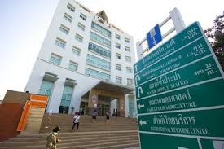
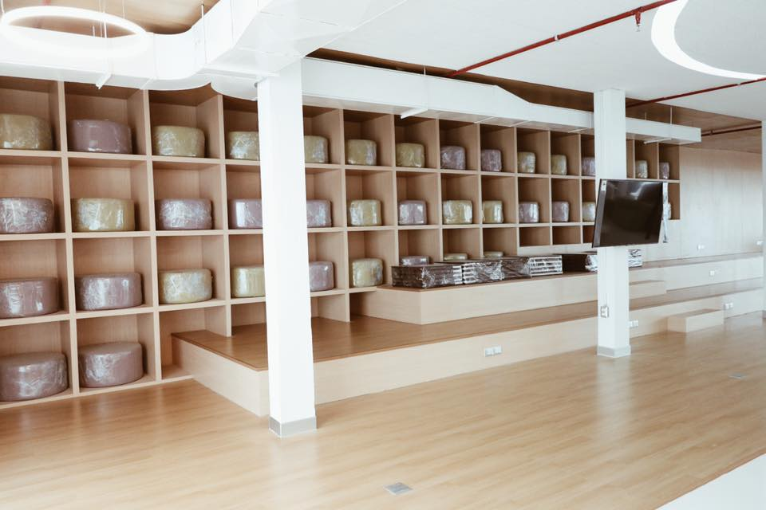
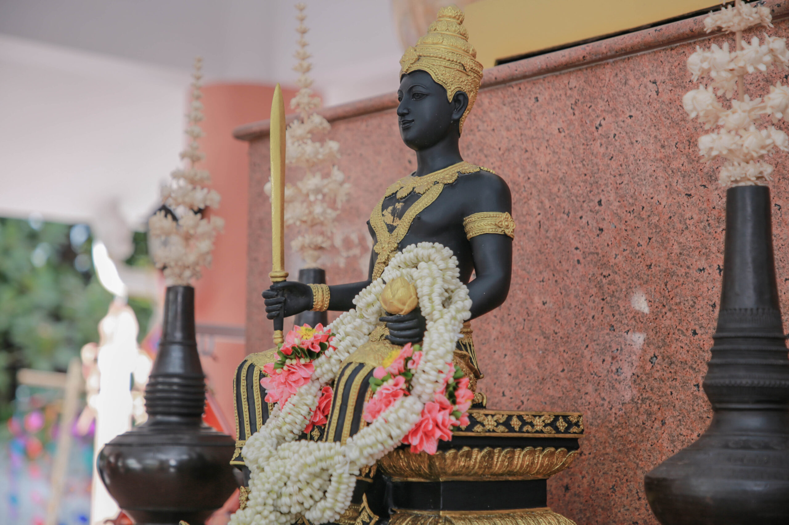
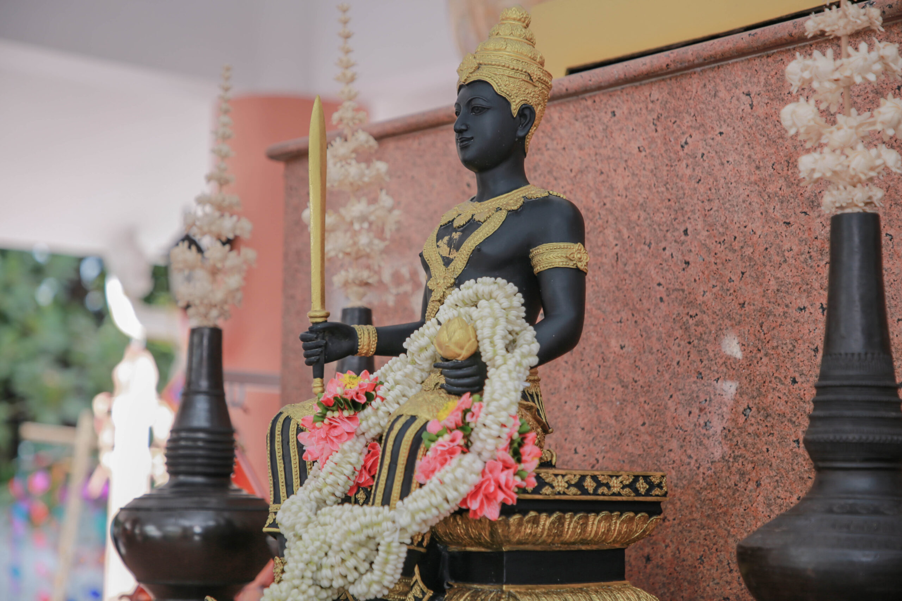

หอสมุดกลาง (Central Library)
หอสมุดกลางเป็นแหล่งทรัพยากรการเรียนรู้หลัก มีหนังสือ ห้องอ่าน และพื้นที่ศึกษาเงียบ เหมาะสำหรับการค้นคว้าและทำโปรเจคกลุ่ม


ตําเเหน่ง
เว็บไซต์นี้แนะนำสถานที่สำคัญภายในมหาวิทยาลัยขอนแก่น (KKU) ที่น่าสนใจสำหรับนักศึกษาและผู้มาเยือน — ทุกสถานที่มีคำอธิบายและภาพประกอบเพื่อช่วยวางแผนการเยี่ยมชม
หอสมุดกลางเป็นแหล่งทรัพยากรการเรียนรู้หลัก มีหนังสือ ห้องอ่าน และพื้นที่ศึกษาเงียบ เหมาะสำหรับการค้นคว้าและทำโปรเจคกลุ่ม
สวนเกษตร มหาวิทยาลัยขอนแก่น เป็นพื้นที่สีเขียวสำหรับการเรียนรู้ด้านการเกษตรที่ผสมผสานธรรมชาติกับงานวิจัยไว้
ศาลเจ้าพ่อมอดินแดง เป็นสถานที่ศักดิ์สิทธิ์คู่กับมหาวิทยาลัยขอนแก่นมายาวนาน เป็นที่เคารพนับถือผู้คนมักมาสักการะเพื่อความเป็นสิริมงคล ขอพรให้การเรียน การงาน และชีวิตราบรื่นสมหวัง
 

ศูนย์การแพทย์ขนาดใหญ่ของมหาวิทยาลัย ให้บริการการรักษาพยาบาลและการเรียนการสอนด้านการแพทย์
โปรเจคตัวอย่าง ออกแบบโดย นายวงศพันธ์ อนันตวงศ์ 663380496-8